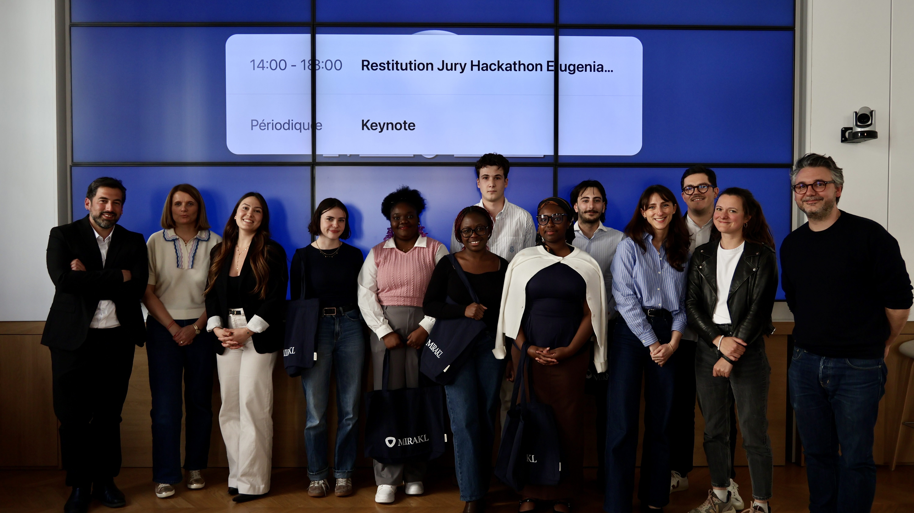

✦ Hackathon · 2025 · 1er Prix 🏆
Sourcing RH automatisé par IA · N8N · Dust · RAG
Hackathon organisé par Mirakl en partenariat avec Eugenia School autour du thème "Agent Led Company" : comment les agents IA peuvent transformer les métiers de l'entreprise. 3 sujets au programme, 6 équipes finalistes. Notre équipe a travaillé sur le recrutement tech : comment identifier les meilleurs profils plus vite que la concurrence ?
Un agent Dust analyse la fiche de poste uploadée (PDF, texte...) et en extrait automatiquement les critères clés : compétences, niveau d'expérience, profil recherché.
En fonction du profil cible, la solution scrape les bons endroits : GitHub pour les profils très techniques, hackathons et podcasts pour les leaders et managers, Malt et LinkedIn pour les freelances et profils mixtes.
Chaque profil reçoit un score de pertinence (/100). Un message de prise de contact personnalisé est généré — que le RH peut relire, modifier et envoyer s'il le souhaite.
En tapant le nom d'un concurrent, un agent analyse en temps réel sa santé financière, ses recrutements en cours et ses signaux de départ. Il recommande ensuite l'action à prendre : approcher leurs talents maintenant, rester attentif, ou patienter.
